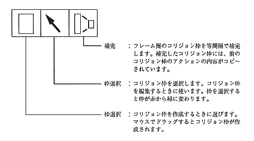

The state of the collision frame
The collision frame has the following two states.
Normal state: The collision frame is displayed in red.
Selected state: The collision frame is displayed in green.
Collision frame selection
Use the following methods to select and clear the collision frame.
Select: Select the frame selection and click the mouse in the collision frame.
Release: Select another collision frame or click with the mouse where no collision frame is displayed.
Collision frame priority
Collision frames can be stacked.
Collision frame priority is given in the order of creation. That is, the collision frame created first has the lowest priority, and the collision frame created later has higher priority.